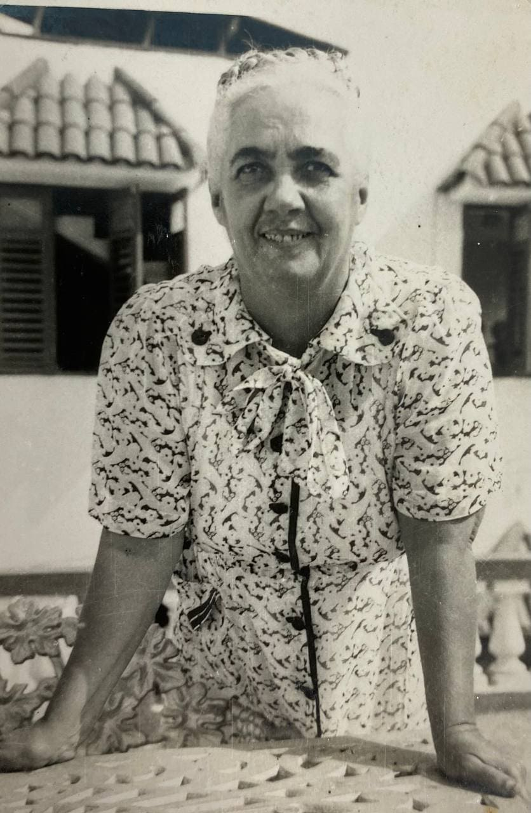
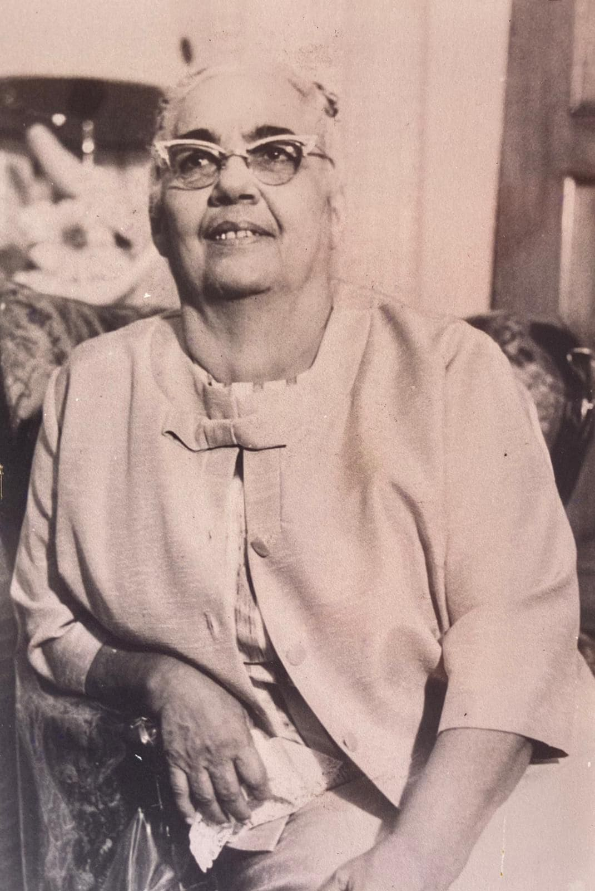
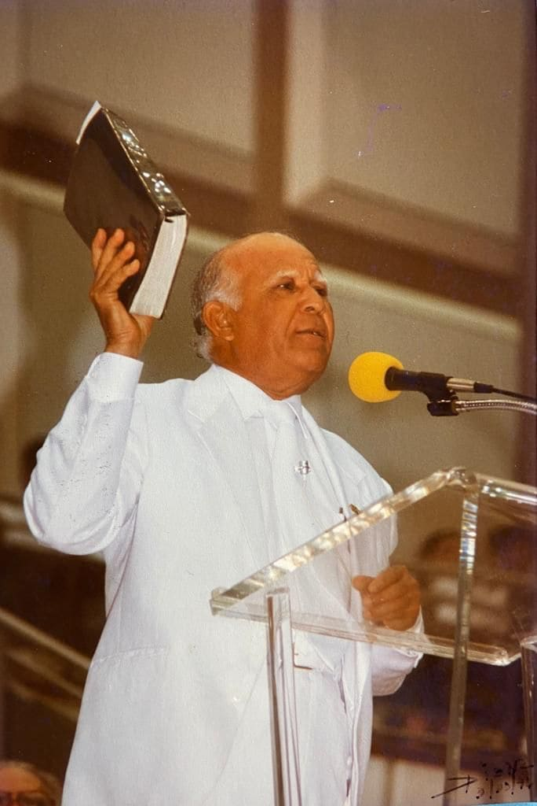
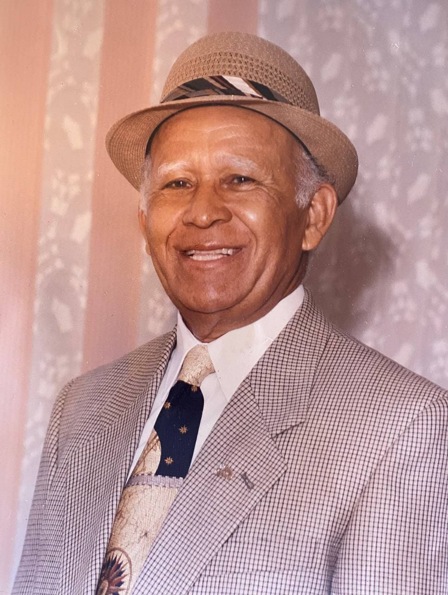

20 年代，胡安妮塔患上了严重的胃病，接受了长达 12 年的治疗。 病情恶化到连饭都吃不下。 医生放弃了她，就在那时，胡安妮塔在床上向上帝呼求，并承诺如果他治愈了她，他会为他服务，并走遍田野和城镇，宣扬健康和救赎的福音。 上帝听到了他们的呼求； 一位经常探望病人的老太太来到她家为她祈祷，让胡安妮塔立刻恢复了健康。 从那一刻起，他信守诺言，将自己献给上帝，加入了五旬节教会。


Juanita García Peraza
胡安妮塔·加西亚·佩拉萨 (Juanita García Peraza) 于 1897 年 6 月 24 日出生于波多黎各的哈蒂略 (Hatillo)。 他来自一个上流社会阶层的家庭。 从孩提时代起，她就表现出伟大的道德和精神价值观、对穷人的爱心、对他人痛苦的高度敏感、勇气、正直和慈善。

他开始因爱、谦卑、献身和圣洁而在教会中脱颖而出。 她是女士团体的主席，上帝在预言中使用她，斥责罪恶并呼吁上帝子民的团结。 教会的领袖不明白神的灵在其中彰显出来； 他们不接受主统一教会的伟大计划。 因此，胡安妮塔面临着巨大的痛苦：他们羞辱她，因为她是一个女人，他们让她闭嘴； 但她总是那么谦虚，相信选择她的人。 有一天，上帝的圣灵告诉她：“我的仆人，把你的身体借给我； 我需要你来完成一项伟大的工作。 谁听你的，谁就听我的；谁与你联合，谁就与我联合»。 她受到所有针对她的迫害，她向上帝呼求，当她在自己的房间里祈祷时，她通过启示看到一颗星从天上以圆周运动的方式降临。 在他的脑海里，他想知道它会落在哪里，但它击中了他的额头：这是上帝圣灵的光，证实了他的事工。
1940年，他与11位弟兄离开五旬节教会，开始宣讲爱、自由和合一的三重信息。 他们是：Teófilo Vargas Seín (Aarón)、Pedro Vargas、Encarnación Seín (Concepción)、Luis Barrios、Octavio Velázquez、Blasina Barreto、Juan Catalán、Tomasa Catalán、Justa Corchado、Juana Allende 和 José "Pepe" Pastoriza。 自由教会成立，他们开始在阿雷西博会面，在最近皈依的兄弟的房子里和租来的寺庙里。 胡安妮塔·加西亚决定放弃她所有的物质财富，谦卑地事奉上帝。

1947年，会众迁往首都圣胡安； 从那里它开始发展和传播它的信息。 除了伟大的精神工作外，她还开展了一项非凡的社会社区工作。 他以最好的方式布道：以身作则。 他设法把他的社区变成一个组织严密的社区。 他发展了合作社和公司，为社区成员提供就业机会、巨大利益和经济改善。 他建立了一所称为辅导员的圣经学校，指导、指导和指导孩子们的全面发展。 他创建了音乐学院、乐队和合唱团。 在他的众多作品中，以下赞美诗脱颖而出：凯旋进行曲、欢迎、烛台、异象、正义、心灵的清洁、白色的石头、如果你作为信徒行事、城墙等.

他成立了一个警卫队，目的是免费监视会众获得的所有财产以及整个社区。 他建立了一个由传教士、男男女女、执事和女执事组成的团体，他们行善、传道、为病人祈祷，并在米塔会众所到之处开展非凡的工作。
作为一个有远见的人，她渴望并预言在社区中建立一个照顾老人的庇护所和一所儿童和青少年学校，在她去世后实现了这一目标。 她做了一项伟大的传教工作，探望病人的家中和医院，为他们祈祷，为有需要的人提供帮助，并全力行善。
他带着鼓励、安慰和爱的话语探访监狱。 他的传福音工作是惊人的。 她的嘴里总是通过睿智的言词、及时的告诫来劝告和建议，但同时又是她一贯的耐心和节制。
这样，可以预料他的部长级工作将极大地影响整个波多黎各的许多人和整个家庭的社会领域和个人改善。 许多酗酒者、吸毒者和抑郁症患者被解救出来，成为有用的男男女女、负责任的正直公民。
他对伟大属灵内容的深刻讲道实现了改变每一个听到和接受信息的人的神圣目的。
他的影响如此之大，以至于他越过波多黎各的边界来到外国，在美国（华盛顿特区、芝加哥和纽约）和多米尼加共和国（圣多明各和圣地亚哥德洛斯卡瓦列罗斯）建立了会众。
我们强调，胡安妮塔·加西亚·佩拉萨 (Juanita García Peraza) 允许妇女广泛参与教会，从而给了她充分表达自己的机会。  她标志着波多黎各和世界女性新时代的开始。 在不允许她主持教会事务的时候，胡安妮塔打破了障碍，为女性牧职的传播开辟了道路，证实了先知以赛亚书 27,11 的话：“当他们的枝子枯干时，他们将坏了，女人会来打开它们。”
正如黛博拉在以色列崛起为一位属灵的母亲，胡安妮塔·加西亚·佩拉萨也崛起为一位母亲，为拯救人民而聚集。
在完成了 30 年非凡的工作后，1970 年 2 月 21 日，她被上帝呼召进入永恒的安息。 他亲手的作品在他的人民心中盛行，作为他不懈奋斗和无条件爱的忠实见证。
在他的事工结束之前，在一群证人面前，他打电话给亚伦并告诉他：“照顾好我的孩子，我会付钱给你”，让他继续他的遗产。 1978年，他被授予荣誉行政学哲学博士学位。
她标志着波多黎各和世界女性新时代的开始。 在不允许她主持教会事务的时候，胡安妮塔打破了障碍，为女性牧职的传播开辟了道路，证实了先知以赛亚书 27,11 的话：“当他们的枝子枯干时，他们将坏了，女人会来打开它们。”
正如黛博拉在以色列崛起为一位属灵的母亲，胡安妮塔·加西亚·佩拉萨也崛起为一位母亲，为拯救人民而聚集。
在完成了 30 年非凡的工作后，1970 年 2 月 21 日，她被上帝呼召进入永恒的安息。 他亲手的作品在他的人民心中盛行，作为他不懈奋斗和无条件爱的忠实见证。
在他的事工结束之前，在一群证人面前，他打电话给亚伦并告诉他：“照顾好我的孩子，我会付钱给你”，让他继续他的遗产。 1978年，他被授予荣誉行政学哲学博士学位。
触摸主要图像以查看其他传记。
Teófilo Vargas Seín
1921 年 10 月 23 日清晨，Teófilo Vargas Seín（以他的灵名 Aarón 而广为人知）出生在波多黎各 Hatillo 的 Aibonito 街区一栋简陋的小房子里。 他的父母是 Pedro
Vargas 和 Encarnación "Concepción" Seín。 面对艰难的怀孕，康塞普西翁向上帝呼求，让她有一个好孩子，并承诺如果她的孩子出生时健康，她将把它完全献给上帝。
 他的请求得到了批准，这个男孩被命名为 Theophilus，意思是“上帝所爱的人”。
特奥菲洛在神圣的恩典下长大，在父母热心行善的正确指导下，在一个谦逊的家庭中，充满荣誉、基督教和伟大的精神价值观。 他是父母的一个自律、勤奋、乐于助人的儿子。
他和他们一起参加了一个五旬节教会，并热情地参与圣经研究，并以属灵美德解释经文。 他孜孜不倦地渴望学习，并向教会的长老们寻求更多的智慧。 当他 10 岁时，全家搬到了阿雷西博，在那里他进一步渴望属灵的恩赐并研究圣经。
一天，当他穿过阿雷西博镇时，他看到了胡安妮塔·加西亚·佩拉萨。 即使不认识她，他也认出她是一位特别的女士，充满了神。 那种惊奇使他永远忘不了他的脸。 上帝安排她的父母去她参加的同一个五旬节教会。
当他看到她时，他认出了她，但令他惊讶的是那天晚上他们让她去传道。 那个孩子的灵魂在颤抖，在那一刻，他明白上帝通过他的口说话。 他对她有一种莫名的同盟感，到处跟着他。
他的请求得到了批准，这个男孩被命名为 Theophilus，意思是“上帝所爱的人”。
特奥菲洛在神圣的恩典下长大，在父母热心行善的正确指导下，在一个谦逊的家庭中，充满荣誉、基督教和伟大的精神价值观。 他是父母的一个自律、勤奋、乐于助人的儿子。
他和他们一起参加了一个五旬节教会，并热情地参与圣经研究，并以属灵美德解释经文。 他孜孜不倦地渴望学习，并向教会的长老们寻求更多的智慧。 当他 10 岁时，全家搬到了阿雷西博，在那里他进一步渴望属灵的恩赐并研究圣经。
一天，当他穿过阿雷西博镇时，他看到了胡安妮塔·加西亚·佩拉萨。 即使不认识她，他也认出她是一位特别的女士，充满了神。 那种惊奇使他永远忘不了他的脸。 上帝安排她的父母去她参加的同一个五旬节教会。
当他看到她时，他认出了她，但令他惊讶的是那天晚上他们让她去传道。 那个孩子的灵魂在颤抖，在那一刻，他明白上帝通过他的口说话。 他对她有一种莫名的同盟感，到处跟着他。
1936 年，15 岁的特奥菲洛来到胡安妮塔修女家，发现她正在跪着祈祷。 看到这一点，他跪在房间的另一个角落以免打扰她，直到突然圣灵抓住了她，她伸手去拿橄榄油（圣灵一直用来膏抹他所选择的器具的液体）和他把它倒在他的头上，说：“我膏你成为王国的部长。” 从那一刻起，他被献身于传讲上帝的圣言。

Teófilo 是 11 名兄弟中的一员，他们于 1940 年与 Juanita García Peraza 一起离开了五旬节教会。 从那一刻起，他穿过波多黎各的田野和城镇，宣布圣灵正在聚集一个城镇进行救赎，并通过阿雷西博一位女士的嘴唇说话。 除了是第一位传教士，他还是乐队的第一位警卫、第一位经理、第一位建设者、农民和打击乐手。 他因圣洁、自我牺牲和对三田工作的承诺而在会众中脱颖而出 1957 年，他管理并领导了在波多黎各联邦之前成立教会的所有程序。 他被任命为董事会副总裁。 上帝在他身上种下了先知应具备的所有品质：圣洁、正直、品格坚定，  牺牲的意愿，面对问题的勇气，智慧和神圣的洞察力， 节制，仁慈，善良，慈善，最重要的是，对灵魂的巨大爱。 因为他在出生前就被选中，并被膏立为王国的牧师，当时主考虑安息胡安妮塔·加西亚 (Juanita García) 的遗体佩拉萨把他的人民托付给亚伦说：“照顾好我的孩子，我会付钱给你。” 这就是 1970 年亚伦如何勇敢地担任三田会众的领导职务。 在他的领导下，Obra de Mita 开始了压倒性的增长，在多米尼加共和国和美国进一步扩张，并在哥伦比亚、墨西哥、委内瑞拉、哥斯达黎加、巴拿马、萨尔瓦多、加拿大、厄瓜多尔、西班牙和瑞士站稳脚跟. 他一生致力于传福音、帮助有需要的人、探访医院、免费为病人祈祷，无论他们是否是圣公会成员。 在三田的工作到达的所有国家，它都建立了乐队、卫队并建造了寺庙。 他总是去这些国家带来鼓舞人心的话语以及爱、自由和团结的三重信息。
他建立了 Congregación Mita College、El Paraíso Aegis and Institution、指导和社会工作办公室以及 Los Hermanos 纪念公园。 他以自己的榜样和工作激励了整个会众。 2003 年，在圣多明各会堂新教堂的落成典礼上，前波多黎各总督拉斐尔·埃尔南德斯·科隆阁下这样评价亚伦：“这个人命令并执行，他所宣扬的就是他所实践的。”

他通过在世界各地建立音乐学院和乐队，推动了美术的发展。 在他的领导下成立了竖琴乐团和小提琴乐团。 在他的众多作品中，以下几首脱颖而出：我与三田的相遇，三田是真正的黎明，我多么爱你的律法！，我们感谢你，用爱呼唤，天堂计算你的荣耀，等等。 在 2021 年 1 月 18 日，经过将近 85 年的事工和 51 年的三田负责，他被上帝呼召进入永恒的安息。自 2012 年以来，他任命 Rosinín 为精神之母和修会领袖。牺牲的意愿，面对问题的勇气，神圣的智慧和洞察力，节制，仁慈，慈善，最重要的是，对灵魂的热爱。
触摸主要图像以查看其他传记。
Rosinín Rodríguez Pérez
Rosinín Rodríguez Pérez 于 1937 年 10 月 18
日出生于波多黎各瓜亚马。他的母亲是伊莎贝尔佩雷斯巴斯克斯和他的父亲赫里贝托罗德里格斯丰塞卡。四岁时，他搬到了圣塞瓦斯蒂安。他在一个具有伟大精神和道德价值观的家庭中长大。自孩提时代起，她就以爱、智慧、善良、温柔和对属灵事物高度敏感而著称。
 他仰望天空，问耶稣他想和他一起走，他想见他的脸，像过去一样和他在一起。
在她很小的时候，她就得了重病，她的母亲呼求上帝派天使来医治她。 突然，伊莎贝尔看到了一个小天使，赤脚行走，坐在罗西宁的床上向他祈祷。 女孩立刻完全痊愈了。
伊莎贝尔总是说，那位天使圣洁的面容铭刻在她的脑海里，如果她再见到他，她就会认出他来。
1955 年，他进入波多黎各大学 Mayagüez 校区攻读工程预科课程，并在那里学习了一年。 1956 年，他搬到了波多黎各大学社会科学学院里奥彼德拉斯校区。 1959
年，他获得了社会科学学士学位，主修心理学和社会学。 然后，他在波多黎各大学完成了 18 个咨询硕士学位学分和 20 个教育学分。
他仰望天空，问耶稣他想和他一起走，他想见他的脸，像过去一样和他在一起。
在她很小的时候，她就得了重病，她的母亲呼求上帝派天使来医治她。 突然，伊莎贝尔看到了一个小天使，赤脚行走，坐在罗西宁的床上向他祈祷。 女孩立刻完全痊愈了。
伊莎贝尔总是说，那位天使圣洁的面容铭刻在她的脑海里，如果她再见到他，她就会认出他来。
1955 年，他进入波多黎各大学 Mayagüez 校区攻读工程预科课程，并在那里学习了一年。 1956 年，他搬到了波多黎各大学社会科学学院里奥彼德拉斯校区。 1959
年，他获得了社会科学学士学位，主修心理学和社会学。 然后，他在波多黎各大学完成了 18 个咨询硕士学位学分和 20 个教育学分。
她的第一份工作经历是在波多黎各大学 Río Piedras 校区的 José M. Lázaro 图书馆担任图书管理员助理。 她的第二次工作经历是在 Bayamón 的 J. R. Dávila Intermediate School，担任西班牙语和社会研究教师。 1960 年，她是教育部营地的客座教师。 1961 年，她在职业康复中心担任辅导员，在那里她有机会帮助会众中的多位弟兄完成他们的职业生涯。 然后，她继续在社会保障残疾确定部门工作，担任顾问。

1962年在教育部青年机会中心工作。 1965年6月至1971年3月，她在劳工部担任职业顾问。
1962 年是他生命中超凡脱俗的一年，因为他遇到了三田并加入了圣公会。 他的灵魂被这部作品的精神之美所折服； 这是我小时候所渴望的，像古人一样与耶稣同行。 每个星期天，他都会拜访会众的牧师之家，与米塔和兄弟们分享。
他正在学习属灵法则以及基督徒应该怎样做。 所有这些神圣的教义都在她内心产生共鸣，并正在改变她。 到1966年，她蒙神呼召，住在三田堂的牧会院。
从那一刻起，她就觉得上帝在为她的未来做准备，因为她看到米塔坚持不懈地教她律法，对亚伦充满爱心和体贴。
有一次，三田的人想去看望罗西宁的母亲。 当伊莎贝尔看到陪同他们的亚伦时，她惊呆了，惊呼道：“罗西宁，他是在你还是个女孩的时候治愈你的天使。 他是天使！ 我就知道你会承认的。”.
胡安妮塔·加西亚·佩拉萨 (Juanita García Peraza) 于 1970 年去世后，他继续忠实地陪伴亚伦完成教团的所有项目。
 他陪同亚伦参加了他所有的部长级旅行，以期工作的扩展和国际化。 她所到之处，都受到万千弟兄的爱戴，在她身上看到了满满的善良和温柔。
在 Obra de Mita 的多个建筑和开发项目中，他始终与 Aarón 并肩作战，始终是他最信任的人。 各国寺庙的兴建、改建、扩建、扩建，他都了如指掌。 他确保了三田会众各方面的正确规划和组织。
一次又一次，Aarón 对他为这个 Obra de Mita 的努力、关心和奉献表示感谢。
他以其伟大的道德和精神价值观，以及他对会众和所有教区居民的献身、关怀、奉献和承诺而脱颖而出。
曾经：
他陪同亚伦参加了他所有的部长级旅行，以期工作的扩展和国际化。 她所到之处，都受到万千弟兄的爱戴，在她身上看到了满满的善良和温柔。
在 Obra de Mita 的多个建筑和开发项目中，他始终与 Aarón 并肩作战，始终是他最信任的人。 各国寺庙的兴建、改建、扩建、扩建，他都了如指掌。 他确保了三田会众各方面的正确规划和组织。
一次又一次，Aarón 对他为这个 Obra de Mita 的努力、关心和奉献表示感谢。
他以其伟大的道德和精神价值观，以及他对会众和所有教区居民的献身、关怀、奉献和承诺而脱颖而出。
曾经：
- ▪ Mita Congregation 牧师之家的成员。
- ▪ Colegio Congregación Mita 的创始成员和第一任管理者。
- ▪ Aegis and El Paraíso Institution 的创始成员。
- ▪ 社会援助和指导办公室的创始成员和第一任行政人员。
- ▪ 三田乐队的教母。
- ▪ Los Hermanos 纪念公园的创始成员。
- ▪ Luis Daniel Silva 博士医学健康中心的创始成员。
- ▪ Los Hermanos Corporation 董事会主席。

自 2012 年以来，圣灵通过亚伦指定她为米塔人民的属灵母亲，并接替她领导会众。 在他的事工和指导下，三田的工作已经传播到智利、尼加拉瓜和意大利等国家，延续了亚伦留下的扩张遗产。 他的艺术创作成果丰硕。 他的赞美诗脱颖而出：神圣的爱、炽热的爱、生命、你是我的理由、信仰、爱与和平、不要忘记我、梦想等。 从 2021 年开始，当亚伦被上帝呼召安息时，罗西宁担任米塔会众的领导，是我们听到上帝声音的工具
触摸主要图像以查看其他传记。